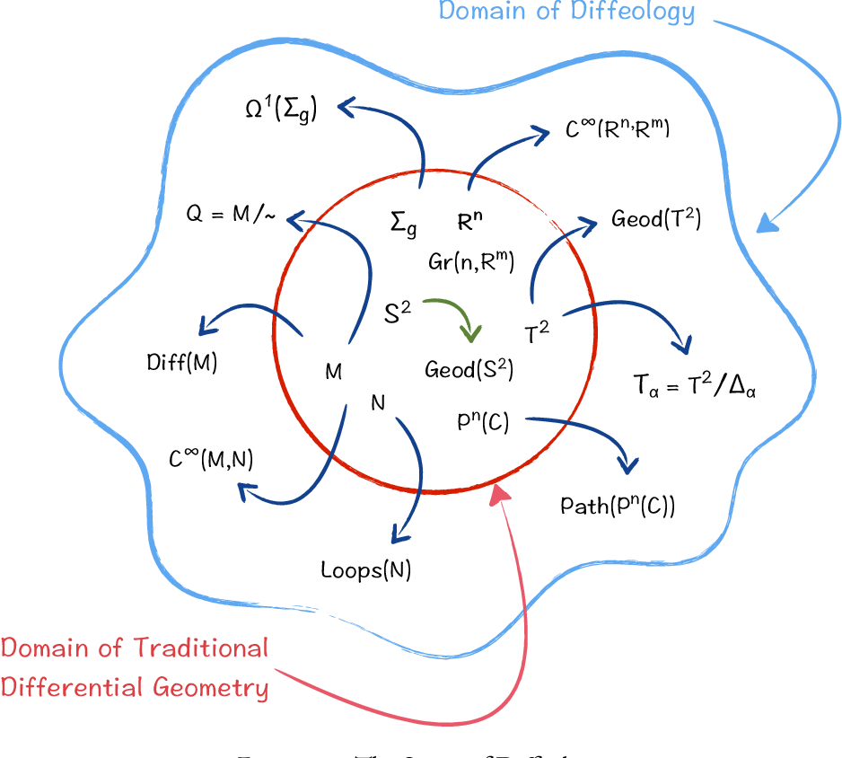
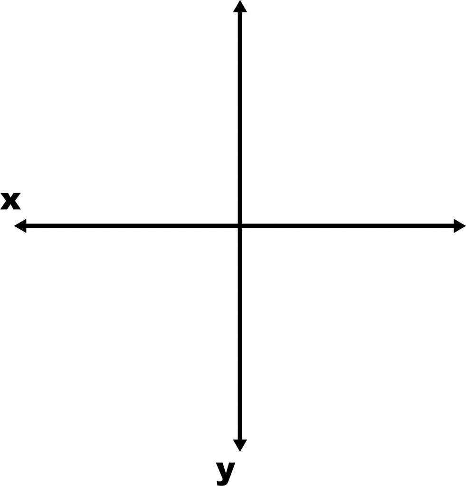

Diffeological Spaces, Part 1
For the first post on my blog, I thought it only appropriate to get started on some posts about diffeological spaces. This is the main subject of study in my PhD research, and will be the topic of my thesis. So in this post, I want to answer the question “What the hell is a diffeological space, and why should I care?”
Okay, so that’s actually two questions, and I will handle the second one (“why should I care?”) first. There are actually many different ways to approach this question, and rather than list a bunch of them, I’ll pick one for this post.
So imagine you are a differential geometer. Your research revolves around finite dimensional smooth manifolds, well behaved mathematical objects with a long history (something like 200 years) of study. You know that whatever tools you need, there will be something in the enormous toolbox of classical differential geometry to suit your needs. Hell, partitions of unity probably get you most of the way.
One day you come across some kind of smooth space, maybe a group of diffeomorphisms, or possibly an orbifold of some kind, which is not a finite dimensional smooth manifold! You want to prove some theorems about this misbehaving space, but when you flip through your textbooks on classical differential geometry, there’s nothing! All of its theorems are about finite dimensional smooth manifolds. You glance over at the dusty tome on your shelf about Banach manifolds, with its hundreds of pages of hardcore functional analysis, and cower in fear.
Okay, maybe that’s a little dramatic. But its something that happens all the time in differential geometry. The truth is, modern differential geometry wishes to study all kinds of crazy spaces that are not finite dimensional smooth manifolds. Yet, the way these crazy spaces are usually dealt with is in an ad hoc manner, and sometimes require lots of functional analysis. When a new kind of crazy space comes along, and we wish to study it, none of the tools we’ve developed thus far will help us. We need to redefine all the concepts of differential geometry we’d like to use on this new kind of crazy space.

Diffeology is a new, modern framework for differential geometry that says “enough is enough, we need a big box of smooth spaces that includes manifolds and all kinds of crazy spaces us modern differential geometers care about, and we need a uniform way of reasoning about these spaces, and extending our old theorems to them.” This might sound like wishful thinking. What mathematics will guide us in this new world, far out from our cozy land of Euclidean spaces and tori? That tool is Category Theory.
You’ve probably heard about category theory already if you are looking at this blog, so I won’t bother trying to explain what it is, as any attempts by myself to do so would probably be embarassing anyway. Why category theory matters here is because there is a category staring us in the face. That category is \(\mathsf{Man}\), the category whose objects are finite dimensional smooth manifolds and whose morphisms are smooth functions between them.
This category sucks!
Indeed, the category \(\mathsf{Man}\) has finite products, transverse pullbacks and a few colimits (but noticeably not any coproducts between manifolds of different dimension!). This is not enough for the working category theorist or really for the working geometer. We want to glue things together willy-nilly, like for instance, this is my favorite example, take two copies of the real line, and glue them together at the origin. We’ll call this space the Axes.

This is not a manifold! If it were, then it would be the colimit of the following diagram in \(\mathsf{Man}\).
\[0 \rightrightarrows \mathbb{R} \sqcup \mathbb{R},\]where each map is the inclusion of the origin into either the left or right copy of \(\mathbb{R}\). But c’mon now, this is a simple space! We should be able to have the usual concepts of differential geometry (tangent spaces, bundles, deRham cohomology, etc.) apply to this thing!
Diffeology is an attempt to do just this. It provides us with a category, \(\mathsf{Diff}\), whose objects are diffeological spaces, which is complete, cocomplete, and locally presentable. If you don’t know what that means exactly, don’t worry about it. The point is that it is a wayyy better category than \(\mathsf{Man}\), it lets us glue stuff together however we like. Our friend the Axes is an object in this category, as are all finite dimensional smooth manifolds, and thus the diagram above can be considered in \(\mathsf{Diff}\), and its colimit is precisely Axes!
This was a super rough, motivational post. I’ll be back next time to delve into some more motivation and some of the history of diffeological spaces.